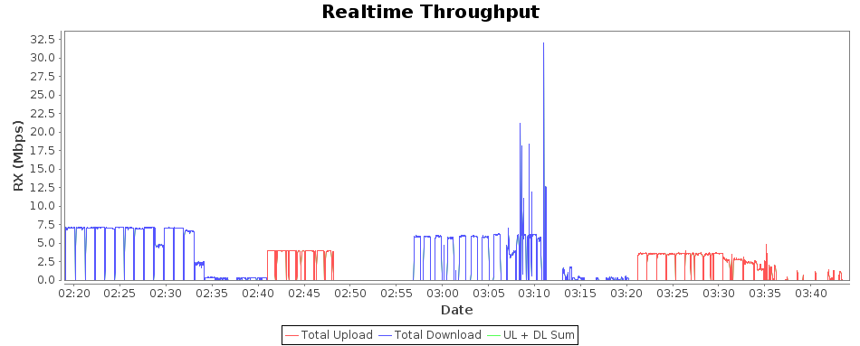
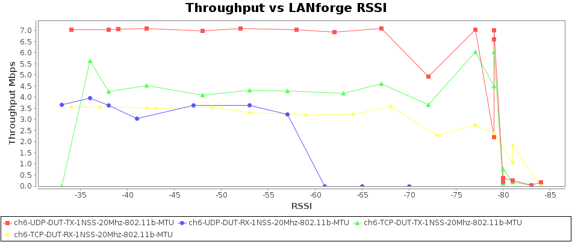
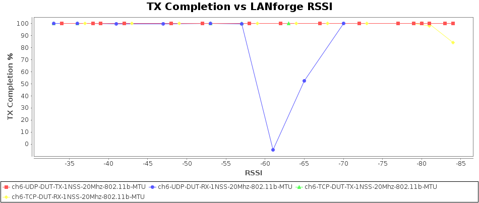
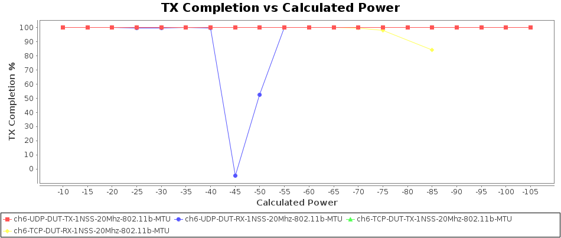
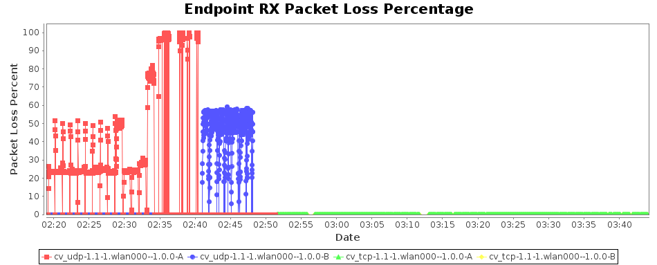
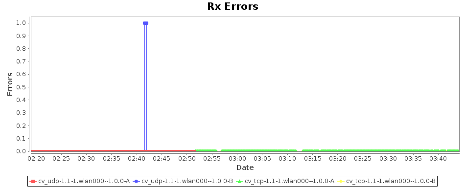

|
Test Setup Information
|
|
Device Under Test
|
|
Name
|
advanced-02
|
|
Software Version
|
eap102-2021-06-25-pending-b6743c3.tar.g
|
Hardware Version
|
eap102
|
|
Model Number
|
eap102
|
Serial Number
|
903cb39d6959
|
|
SSIDs
|
ssid_wpa2_2g
|
|
Passwords
|
something
|
|
BSSIDs
|
90:3c:b3:9d:6b:01
|
|
Notes
|
[BLANK]
|
|
Objective
This test measures the performance over distance of the Device Under
Test. Distance is emulated using programmable attenuation and a
throughput test is run at each distance/RSSI step and plotted on a
chart. The test allows the user to plot RSSI curves both upstream and
downstream for different types of traffic and different station types.
Throughput vs calculated RF Signal for each different traffic type. The signal is calculated based on the configured path-loss, transmit power, and attenuation.
CSV Data for Throughput vs Calculated Signal

Realtime Graph shows summary download and upload RX Goodput rate of connections created by this test. Goodput does not include Ethernet, IP, UDP/TCP header overhead.
CSV Data for Realtime Throughput

Test Information
|
Message
|
|
Starting Rate vs Range test with: 80 iterations.
|
Throughput vs reported RSSI for each different traffic type. Please note that the LANforge RSSI may be similar to the remote Device Under Test RSSI but there is no guarantee of this. Differences in tx-power and RF splitter/combiners can cause different RSSI as reported by LANforge and the remote peer device.
CSV Data for Throughput vs LANforge RSSI

TX Completion vs LANforge RSSI for each MCS Encoding Rate. Please note that the LANforge RSSI may be similar to the remote Device Under Test RSSI but there is no guarantee of this. Differences in tx-power and RF splitter/combiners can cause different RSSI as reported by LANforge and the remote peer device.
CSV Data for TX Completion vs LANforge RSSI

TX Completion vs Calculated Signal Power for each MCS Encoding Rate.
CSV Data for TX Completion vs Calculated Power

| Channel | Frequency | Security | NSS | Cfg-Mode | Bandwidth | Pkt | Traffic-Type | Direction | Atten | Rotation | Duration | Offered-1m | Rx-Bps | Rx-Bps-1m | Rx-Bps-LL | Rx-Bps-3s | RSSI | Tx-Failed | Tx-Failed% | Tx-Rate | Rx-Rate | Rpt-Mode | Rpt-Mode-Brief |
|---|
| 6 | 2437 | WPA2 | 1 | 802.11b | 20 | MTU | UDP | DUT-TX | 0 | NA | 60 | 9.213 Mbps | 7.047 Mbps | 7.05 Mbps | 7.251 Mbps | 7.066 Mbps | -34 | 0 / 46832 | 0 | 11 Mbps | 11 Mbps | 802.11b | 802.11b |
| 6 | 2437 | WPA2 | 1 | 802.11b | 20 | MTU | UDP | DUT-TX | 5.0 | NA | 60 | 9.221 Mbps | 6.852 Mbps | 7.054 Mbps | 7.255 Mbps | 7.066 Mbps | -38 | 0 / 50011 | 0 | 11 Mbps | 11 Mbps | 802.11b | 802.11b |
| 6 | 2437 | WPA2 | 1 | 802.11b | 20 | MTU | UDP | DUT-TX | 10.0 | NA | 60 | 9.217 Mbps | 6.866 Mbps | 7.061 Mbps | 7.262 Mbps | 7.075 Mbps | -39 | 0 / 49425 | 0 | 11 Mbps | 11 Mbps | 802.11b | 802.11b |
| 6 | 2437 | WPA2 | 1 | 802.11b | 20 | MTU | UDP | DUT-TX | 15.0 | NA | 60 | 9.216 Mbps | 6.89 Mbps | 7.086 Mbps | 7.288 Mbps | 7.098 Mbps | -42 | 0 / 48089 | 0 | 11 Mbps | 11 Mbps | 802.11b | 802.11b |
| 6 | 2437 | WPA2 | 1 | 802.11b | 20 | MTU | UDP | DUT-TX | 20.0 | NA | 60 | 9.215 Mbps | 6.804 Mbps | 6.998 Mbps | 7.198 Mbps | 6.874 Mbps | -48 | 0 / 48629 | 0 | 11 Mbps | 11 Mbps | 802.11b | 802.11b |
| 6 | 2437 | WPA2 | 1 | 802.11b | 20 | MTU | UDP | DUT-TX | 25.0 | NA | 60 | 9.215 Mbps | 6.906 Mbps | 7.104 Mbps | 7.307 Mbps | 7.11 Mbps | -52 | 0 / 48002 | 0 | 11 Mbps | 11 Mbps | 802.11b | 802.11b |
| 6 | 2437 | WPA2 | 1 | 802.11b | 20 | MTU | UDP | DUT-TX | 30.0 | NA | 60 | 9.217 Mbps | 6.868 Mbps | 7.051 Mbps | 7.252 Mbps | 7.063 Mbps | -58 | 0 / 49440 | 0 | 11 Mbps | 11 Mbps | 802.11b | 802.11b |
| 6 | 2437 | WPA2 | 1 | 802.11b | 20 | MTU | UDP | DUT-TX | 35.0 | NA | 60 | 9.217 Mbps | 6.731 Mbps | 6.926 Mbps | 7.123 Mbps | 6.82 Mbps | -62 | 0 / 48581 | 0 | 11 Mbps | 11 Mbps | 802.11b | 802.11b |
| 6 | 2437 | WPA2 | 1 | 802.11b | 20 | MTU | UDP | DUT-TX | 40.0 | NA | 60 | 9.216 Mbps | 6.902 Mbps | 7.083 Mbps | 7.285 Mbps | 7.092 Mbps | -67 | 0 / 49530 | 0 | 11 Mbps | 11 Mbps | 802.11b | 802.11b |
| 6 | 2437 | WPA2 | 1 | 802.11b | 20 | MTU | UDP | DUT-TX | 45.0 | NA | 60 | 9.218 Mbps | 4.804 Mbps | 4.944 Mbps | 5.085 Mbps | 4.676 Mbps | -72 | 0 / 48413 | 0 | 11 Mbps | 11 Mbps | 802.11b | 802.11b |
| 6 | 2437 | WPA2 | 1 | 802.11b | 20 | MTU | UDP | DUT-TX | 50.0 | NA | 60 | 9.214 Mbps | 7.028 Mbps | 7.028 Mbps | 7.229 Mbps | 7.018 Mbps | -77 | 0 / 47061 | 0 | 11 Mbps | 11 Mbps | 802.11b | 802.11b |
| 6 | 2437 | WPA2 | 1 | 802.11b | 20 | MTU | UDP | DUT-TX | 55.0 | NA | 60 | 9.212 Mbps | 7.018 Mbps | 7.018 Mbps | 7.219 Mbps | 6.985 Mbps | -79 | 0 / 47578 | 0 | 11 Mbps | 11 Mbps | 802.11b | 802.11b |
| 6 | 2437 | WPA2 | 1 | 802.11b | 20 | MTU | UDP | DUT-TX | 60.0 | NA | 60 | 9.212 Mbps | 6.61 Mbps | 6.611 Mbps | 6.8 Mbps | 6.548 Mbps | -79 | 0 / 47836 | 0 | 11 Mbps | 11 Mbps | 802.11b | 802.11b |
| 6 | 2437 | WPA2 | 1 | 802.11b | 20 | MTU | UDP | DUT-TX | 65.0 | NA | 60 | 9.216 Mbps | 2.213 Mbps | 2.215 Mbps | 2.278 Mbps | 2.537 Mbps | -79 | 0 / 48780 | 0 | 11 Mbps | 5.5 Mbps | 802.11b | 802.11b |
| 6 | 2437 | WPA2 | 1 | 802.11b | 20 | MTU | UDP | DUT-TX | 70.0 | NA | 60 | 9.218 Mbps | 353.537 Kbps | 354.6 Kbps | 364.717 Kbps | 328.317 Kbps | -80 | 0 / 48448 | 0 | 11 Mbps | 1 Mbps | 802.11b | 802.11b |
| 6 | 2437 | WPA2 | 1 | 802.11b | 20 | MTU | UDP | DUT-TX | 75.0 | NA | 60 | 9.211 Mbps | 166.977 Kbps | 165.889 Kbps | 170.622 Kbps | 0 bps | -84 | 0 / 47073 | 0 | 11 Mbps | 1 Mbps | 802.11b | 802.11b |
| 6 | 2437 | WPA2 | 1 | 802.11b | 20 | MTU | UDP | DUT-TX | 80.0 | NA | 60 | 2.263 Mbps | 29.201 Kbps | 27.779 Kbps | 28.571 Kbps | 0 bps | -83 | 0 / 11757 | 0 | 1 Mbps | 0 bps | 802.11b | 802.11b |
| 6 | 2437 | WPA2 | 1 | 802.11b | 20 | MTU | UDP | DUT-TX | 85.0 | NA | 60 | 9.211 Mbps | 211.257 Kbps | 210.568 Kbps | 216.576 Kbps | 269.618 Kbps | -80 | 0 / 47088 | 0 | 11 Mbps | 1 Mbps | 802.11b | 802.11b |
| 6 | 2437 | WPA2 | 1 | 802.11b | 20 | MTU | UDP | DUT-TX | 90.0 | NA | 60 | 9.21 Mbps | 248.117 Kbps | 247.919 Kbps | 254.993 Kbps | 278.789 Kbps | -81 | 0 / 47119 | 0 | 11 Mbps | 1 Mbps | 802.11b | 802.11b |
| 6 | 2437 | WPA2 | 1 | 802.11b | 20 | MTU | UDP | DUT-TX | 95.0 | NA | 60 | 9.211 Mbps | 251.253 Kbps | 250.893 Kbps | 258.051 Kbps | 281.229 Kbps | -80 | 0 / 47283 | 0 | 11 Mbps | 1 Mbps | 802.11b | 802.11b |
| 6 | 2437 | WPA2 | 1 | 802.11b | 20 | MTU | UDP | DUT-RX | 0 | NA | 60 | 7.216 Mbps | 3.656 Mbps | 3.656 Mbps | 3.76 Mbps | 3.982 Mbps | -33 | 32 / 19014 | 0.168 | 11 Mbps | 1 Mbps | 802.11b | 802.11b |
| 6 | 2437 | WPA2 | 1 | 802.11b | 20 | MTU | UDP | DUT-RX | 5.0 | NA | 60 | 8.142 Mbps | 3.973 Mbps | 3.973 Mbps | 4.086 Mbps | 3.975 Mbps | -36 | 29 / 20614 | 0.141 | 11 Mbps | 11 Mbps | 802.11b | 802.11b |
| 6 | 2437 | WPA2 | 1 | 802.11b | 20 | MTU | UDP | DUT-RX | 10.0 | NA | 60 | 7.152 Mbps | 3.631 Mbps | 3.63 Mbps | 3.733 Mbps | 3.933 Mbps | -38 | 29 / 18544 | 0.156 | 11 Mbps | 1 Mbps | 802.11b | 802.11b |
| 6 | 2437 | WPA2 | 1 | 802.11b | 20 | MTU | UDP | DUT-RX | 15.0 | NA | 60 | 5.715 Mbps | 3.033 Mbps | 3.027 Mbps | 3.113 Mbps | 0 bps | -41 | 31 / 15499 | 0.2 | 11 Mbps | 1 Mbps | 802.11b | 802.11b |
| 6 | 2437 | WPA2 | 1 | 802.11b | 20 | MTU | UDP | DUT-RX | 20.0 | NA | 60 | 7.259 Mbps | 3.625 Mbps | 3.636 Mbps | 3.74 Mbps | 3.974 Mbps | -47 | 41 / 19156 | 0.214 | 11 Mbps | 1 Mbps | 802.11b | 802.11b |
| 6 | 2437 | WPA2 | 1 | 802.11b | 20 | MTU | UDP | DUT-RX | 25.0 | NA | 60 | 7.206 Mbps | 3.649 Mbps | 3.647 Mbps | 3.752 Mbps | 3.991 Mbps | -53 | 32 / 18983 | 0.169 | 11 Mbps | 1 Mbps | 802.11b | 802.11b |
| 6 | 2437 | WPA2 | 1 | 802.11b | 20 | MTU | UDP | DUT-RX | 30.0 | NA | 60 | 6.177 Mbps | 3.23 Mbps | 3.23 Mbps | 3.322 Mbps | 3.818 Mbps | -57 | 35 / 16509 | 0.212 | 11 Mbps | 1 Mbps | 802.11b | 802.11b |
| 6 | 2437 | WPA2 | 1 | 802.11b | 20 | MTU | UDP | DUT-RX | 35.0 | NA | 60 | 133.24 Kbps | 0 bps | 0 bps | 0 bps | 0 bps | -61 | 112 / 107 | 104.673 | 11 Mbps | 1 Mbps | 802.11b | 802.11b |
| 6 | 2437 | WPA2 | 1 | 802.11b | 20 | MTU | UDP | DUT-RX | 40.0 | NA | 60 | 196.256 Kbps | 0 bps | 0 bps | 0 bps | 0 bps | -65 | 29 / 61 | 47.541 | 11 Mbps | 1 Mbps | 802.11b | 802.11b |
| 6 | 2437 | WPA2 | 1 | 802.11b | 20 | MTU | UDP | DUT-RX | 45.0 | NA | 60 | 203.633 Kbps | 0 bps | 0 bps | 0 bps | 0 bps | -70 | 0 / 32 | 0 | 11 Mbps | 1 Mbps | 802.11b | 802.11b |
| 6 | 2437 | WPA2 | 1 | 802.11b | 20 | MTU | TCP | DUT-TX | 0 | NA | 60 | 0 bps | 0 bps | 0 bps | 0 bps | 0 bps | -33 | 0 / 34 | 0 | 11 Mbps | 1 Mbps | 802.11b | 802.11b |
| 6 | 2437 | WPA2 | 1 | 802.11b | 20 | MTU | TCP | DUT-TX | 5.0 | NA | 60 | 9.361 Mbps | 5.613 Mbps | 5.636 Mbps | 5.642 Mbps | 2.294 Mbps | -36 | 0 / 35576 | 0 | 11 Mbps | 11 Mbps | 802.11b | 802.11b |
| 6 | 2437 | WPA2 | 1 | 802.11b | 20 | MTU | TCP | DUT-TX | 10.0 | NA | 60 | 7.723 Mbps | 3.336 Mbps | 4.25 Mbps | 4.255 Mbps | 0 bps | -38 | 0 / 42031 | 0 | 11 Mbps | 11 Mbps | 802.11b | 802.11b |
| 6 | 2437 | WPA2 | 1 | 802.11b | 20 | MTU | TCP | DUT-TX | 15.0 | NA | 60 | 7.677 Mbps | 3.77 Mbps | 4.521 Mbps | 4.534 Mbps | 7.052 Mbps | -42 | 0 / 44149 | 0 | 11 Mbps | 11 Mbps | 802.11b | 802.11b |
| 6 | 2437 | WPA2 | 1 | 802.11b | 20 | MTU | TCP | DUT-TX | 20.0 | NA | 60 | 7.57 Mbps | 3.222 Mbps | 4.105 Mbps | 4.11 Mbps | 1.221 Mbps | -48 | 0 / 40798 | 0 | 5.5 Mbps | 11 Mbps | 802.11b | 802.11b |
| 6 | 2437 | WPA2 | 1 | 802.11b | 20 | MTU | TCP | DUT-TX | 25.0 | NA | 60 | 7.802 Mbps | 3.383 Mbps | 4.309 Mbps | 4.313 Mbps | 0 bps | -53 | 0 / 41689 | 0 | 11 Mbps | 11 Mbps | 802.11b | 802.11b |
| 6 | 2437 | WPA2 | 1 | 802.11b | 20 | MTU | TCP | DUT-TX | 30.0 | NA | 60 | 7.751 Mbps | 3.368 Mbps | 4.289 Mbps | 4.294 Mbps | 0 bps | -57 | 0 / 41716 | 0 | 11 Mbps | 11 Mbps | 802.11b | 802.11b |
| 6 | 2437 | WPA2 | 1 | 802.11b | 20 | MTU | TCP | DUT-TX | 35.0 | NA | 60 | 7.683 Mbps | 3.474 Mbps | 4.184 Mbps | 4.188 Mbps | 0 bps | -63 | 0 / 41873 | 0 | 11 Mbps | 11 Mbps | 802.11b | 802.11b |
| 6 | 2437 | WPA2 | 1 | 802.11b | 20 | MTU | TCP | DUT-TX | 40.0 | NA | 60 | 8.088 Mbps | 3.821 Mbps | 4.606 Mbps | 4.611 Mbps | 0 bps | -67 | 0 / 43350 | 0 | 5.5 Mbps | 11 Mbps | 802.11b | 802.11b |
| 6 | 2437 | WPA2 | 1 | 802.11b | 20 | MTU | TCP | DUT-TX | 45.0 | NA | 60 | 4.716 Mbps | 3.677 Mbps | 3.665 Mbps | 3.709 Mbps | 3.835 Mbps | -72 | 0 / 19604 | 0 | 11 Mbps | 11 Mbps | 802.11b | 802.11b |
| 6 | 2437 | WPA2 | 1 | 802.11b | 20 | MTU | TCP | DUT-TX | 50.0 | NA | 60 | 9.128 Mbps | 6.036 Mbps | 6.038 Mbps | 6.116 Mbps | 6.103 Mbps | -77 | 0 / 32252 | 0 | 5.5 Mbps | 11 Mbps | 802.11b | 802.11b |
| 6 | 2437 | WPA2 | 1 | 802.11b | 20 | MTU | TCP | DUT-TX | 55.0 | NA | 60 | 8.321 Mbps | 6.027 Mbps | 6.033 Mbps | 6.079 Mbps | 6.006 Mbps | -79 | 0 / 31583 | 0 | 11 Mbps | 11 Mbps | 802.11b | 802.11b |
| 6 | 2437 | WPA2 | 1 | 802.11b | 20 | MTU | TCP | DUT-TX | 60.0 | NA | 60 | 8.294 Mbps | 4.508 Mbps | 4.503 Mbps | 4.59 Mbps | 0 bps | -79 | 0 / 34023 | 0 | 5.5 Mbps | 11 Mbps | 802.11b | 802.11b |
| 6 | 2437 | WPA2 | 1 | 802.11b | 20 | MTU | TCP | DUT-TX | 65.0 | NA | 60 | 757.914 Kbps | 779.373 Kbps | 768.949 Kbps | 772.776 Kbps | 1.214 Mbps | -80 | 0 / 4234 | 0 | 11 Mbps | 1 Mbps | 802.11b | 802.11b |
| 6 | 2437 | WPA2 | 1 | 802.11b | 20 | MTU | TCP | DUT-TX | 70.0 | NA | 60 | 407.643 Kbps | 184.55 Kbps | 184.254 Kbps | 186.186 Kbps | 279.786 Kbps | -80 | 0 / 1369 | 0 | 1 Mbps | 1 Mbps | 802.11b | 802.11b |
| 6 | 2437 | WPA2 | 1 | 802.11b | 20 | MTU | TCP | DUT-TX | 75.0 | NA | 60 | 104.911 Kbps | 31.667 Kbps | 29.447 Kbps | 29.476 Kbps | 0 bps | -83 | 0 / 421 | 0 | 1 Mbps | 0 bps | 802.11b | 802.11b |
| 6 | 2437 | WPA2 | 1 | 802.11b | 20 | MTU | TCP | DUT-TX | 80.0 | NA | 60 | 211.329 Kbps | 44.193 Kbps | 43.706 Kbps | 43.742 Kbps | 0 bps | 0 | 0 / 571 | 0 | 0 Mbps | 0 bps | 802.11b | 802.11b |
| 6 | 2437 | WPA2 | 1 | 802.11b | 20 | MTU | TCP | DUT-TX | 85.0 | NA | 60 | 307.871 Kbps | 184.479 Kbps | 183.519 Kbps | 185.048 Kbps | 222.093 Kbps | -81 | 0 / 1141 | 0 | 1 Mbps | 1 Mbps | 802.11b | 802.11b |
| 6 | 2437 | WPA2 | 1 | 802.11b | 20 | MTU | TCP | DUT-TX | 90.0 | NA | 60 | 280.436 Kbps | 131.725 Kbps | 130.55 Kbps | 132.056 Kbps | 279.786 Kbps | -80 | 0 / 1097 | 0 | 11 Mbps | 1 Mbps | 802.11b | 802.11b |
| 6 | 2437 | WPA2 | 1 | 802.11b | 20 | MTU | TCP | DUT-TX | 95.0 | NA | 60 | 238.632 Kbps | 45.548 Kbps | 43.904 Kbps | 43.94 Kbps | 0 bps | 0 | 0 / 623 | 0 | 0 Mbps | 0 bps | 802.11b | 802.11b |
| 6 | 2437 | WPA2 | 1 | 802.11b | 20 | MTU | TCP | DUT-RX | 0 | NA | 60 | 3.562 Mbps | 3.56 Mbps | 3.562 Mbps | 3.578 Mbps | 3.574 Mbps | -34 | 0 / 18510 | 0 | 11 Mbps | 11 Mbps | 802.11b | 802.11b |
| 6 | 2437 | WPA2 | 1 | 802.11b | 20 | MTU | TCP | DUT-RX | 5.0 | NA | 60 | 3.556 Mbps | 3.532 Mbps | 3.541 Mbps | 3.557 Mbps | 3.566 Mbps | -37 | 1 / 18951 | 0.005 | 11 Mbps | 11 Mbps | 802.11b | 802.11b |
| 6 | 2437 | WPA2 | 1 | 802.11b | 20 | MTU | TCP | DUT-RX | 10.0 | NA | 60 | 3.568 Mbps | 3.537 Mbps | 3.54 Mbps | 3.556 Mbps | 3.529 Mbps | -42 | 1 / 18345 | 0.005 | 11 Mbps | 11 Mbps | 802.11b | 802.11b |
| 6 | 2437 | WPA2 | 1 | 802.11b | 20 | MTU | TCP | DUT-RX | 15.0 | NA | 60 | 3.488 Mbps | 3.495 Mbps | 3.494 Mbps | 3.51 Mbps | 3.538 Mbps | -43 | 0 / 18389 | 0 | 11 Mbps | 11 Mbps | 802.11b | 802.11b |
| 6 | 2437 | WPA2 | 1 | 802.11b | 20 | MTU | TCP | DUT-RX | 20.0 | NA | 60 | 3.552 Mbps | 3.556 Mbps | 3.557 Mbps | 3.572 Mbps | 3.627 Mbps | -49 | 1 / 18728 | 0.005 | 11 Mbps | 11 Mbps | 802.11b | 802.11b |
| 6 | 2437 | WPA2 | 1 | 802.11b | 20 | MTU | TCP | DUT-RX | 25.0 | NA | 60 | 3.303 Mbps | 3.294 Mbps | 3.302 Mbps | 3.318 Mbps | 3.585 Mbps | -53 | 10 / 17005 | 0.059 | 11 Mbps | 11 Mbps | 802.11b | 802.11b |
| 6 | 2437 | WPA2 | 1 | 802.11b | 20 | MTU | TCP | DUT-RX | 30.0 | NA | 60 | 3.192 Mbps | 3.196 Mbps | 3.198 Mbps | 3.213 Mbps | 2.962 Mbps | -59 | 11 / 16850 | 0.065 | 5.5 Mbps | 11 Mbps | 802.11b | 802.11b |
| 6 | 2437 | WPA2 | 1 | 802.11b | 20 | MTU | TCP | DUT-RX | 35.0 | NA | 60 | 3.215 Mbps | 3.216 Mbps | 3.217 Mbps | 3.232 Mbps | 3.571 Mbps | -64 | 11 / 16699 | 0.066 | 11 Mbps | 11 Mbps | 802.11b | 802.11b |
| 6 | 2437 | WPA2 | 1 | 802.11b | 20 | MTU | TCP | DUT-RX | 40.0 | NA | 60 | 3.61 Mbps | 3.592 Mbps | 3.594 Mbps | 3.61 Mbps | 3.562 Mbps | -68 | 0 / 18906 | 0 | 11 Mbps | 11 Mbps | 802.11b | 802.11b |
| 6 | 2437 | WPA2 | 1 | 802.11b | 20 | MTU | TCP | DUT-RX | 45.0 | NA | 60 | 2.325 Mbps | 2.299 Mbps | 2.296 Mbps | 2.305 Mbps | 3.391 Mbps | -73 | 20 / 11946 | 0.167 | 11 Mbps | 2 Mbps | 802.11b | 802.11b |
| 6 | 2437 | WPA2 | 1 | 802.11b | 20 | MTU | TCP | DUT-RX | 50.0 | NA | 60 | 2.761 Mbps | 2.728 Mbps | 2.734 Mbps | 2.744 Mbps | 2.628 Mbps | -77 | 1 / 14537 | 0.007 | 11 Mbps | 1 Mbps | 802.11b | 802.11b |
| 6 | 2437 | WPA2 | 1 | 802.11b | 20 | MTU | TCP | DUT-RX | 55.0 | NA | 60 | 2.348 Mbps | 2.362 Mbps | 2.352 Mbps | 2.363 Mbps | 2.263 Mbps | -79 | 0 / 12570 | 0 | 11 Mbps | 1 Mbps | 802.11b | 802.11b |
| 6 | 2437 | WPA2 | 1 | 802.11b | 20 | MTU | TCP | DUT-RX | 60.0 | NA | 60 | 1.808 Mbps | 1.82 Mbps | 1.815 Mbps | 1.826 Mbps | 1.511 Mbps | -81 | 39 / 9396 | 0.415 | 11 Mbps | 1 Mbps | 802.11b | 802.11b |
| 6 | 2437 | WPA2 | 1 | 802.11b | 20 | MTU | TCP | DUT-RX | 65.0 | NA | 60 | 2.034 Mbps | 1.067 Mbps | 1.053 Mbps | 1.072 Mbps | 139.893 Kbps | -81 | 111 / 5780 | 1.92 | 1 Mbps | 1 Mbps | 802.11b | 802.11b |
| 6 | 2437 | WPA2 | 1 | 802.11b | 20 | MTU | TCP | DUT-RX | 70.0 | NA | 60 | 1.056 Mbps | 226.528 Kbps | 211.448 Kbps | 211.636 Kbps | 0 bps | 0 | 63 / 1890 | 3.333 | 0 Mbps | 0 bps | 802.11b | 802.11b |
| 6 | 2437 | WPA2 | 1 | 802.11b | 20 | MTU | TCP | DUT-RX | 75.0 | NA | 60 | 25.383 Kbps | 27.227 Kbps | 24.414 Kbps | 24.559 Kbps | 0 bps | -84 | 26 / 163 | 15.951 | 1 Mbps | 0 bps | 802.11b | 802.11b |
| 6 | 2437 | WPA2 | 1 | 802.11b | 20 | MTU | TCP | DUT-RX | 80.0 | NA | 60 | 0 bps | 22.907 Kbps | 7.547 Kbps | 7.807 Kbps | 0 bps | 0 | 15 / 522 | 2.874 | 0 Mbps | 0 bps | 802.11b | 802.11b |
| 6 | 2437 | WPA2 | 1 | 802.11b | 20 | MTU | TCP | DUT-RX | 85.0 | NA | 60 | 30.744 Kbps | 46.443 Kbps | 37.165 Kbps | 37.615 Kbps | 0 bps | 0 | 2 / 234 | 0.855 | 0 Mbps | 0 bps | 802.11b | 802.11b |
| 6 | 2437 | WPA2 | 1 | 802.11b | 20 | MTU | TCP | DUT-RX | 90.0 | NA | 60 | 263.774 Kbps | 268.301 Kbps | 255.834 Kbps | 258.961 Kbps | 0 bps | 0 | 67 / 1464 | 4.577 | 0 Mbps | 0 bps | 802.11b | 802.11b |
| 6 | 2437 | WPA2 | 1 | 802.11b | 20 | MTU | TCP | DUT-RX | 95.0 | NA | 60 | 264.209 Kbps | 222.396 Kbps | 215.995 Kbps | 218.92 Kbps | 0 bps | 0 | 36 / 1201 | 2.998 | 0 Mbps | 0 bps | 802.11b | 802.11b |
Brief csv report, may be imported into third-party tools.
| Step Index | Position [Deg] | Attenuation [dB] | Throughput [Mbps] | Beacon RSSI [dBm] | Data RSSI [dBm] |
|---|
| 0 | NA | 0 | 7.05 | -33 | -34 |
| 1 | NA | 5.00 | 6.85 | -37 | -38 |
| 2 | NA | 10.00 | 6.87 | -38 | -39 |
| 3 | NA | 15.00 | 6.89 | -41 | -42 |
| 4 | NA | 20.00 | 6.80 | -46 | -48 |
| 5 | NA | 25.00 | 6.91 | -51 | -52 |
| 6 | NA | 30.00 | 6.87 | -56 | -58 |
| 7 | NA | 35.00 | 6.73 | -60 | -62 |
| 8 | NA | 40.00 | 6.90 | -66 | -67 |
| 9 | NA | 45.00 | 4.80 | -70 | -72 |
| 10 | NA | 50.00 | 7.03 | -75 | -77 |
| 11 | NA | 55.00 | 7.02 | -79 | -79 |
| 12 | NA | 60.00 | 6.61 | -82 | -79 |
| 13 | NA | 65.00 | 2.21 | -83 | -79 |
| 14 | NA | 70.00 | 0.35 | -83 | -80 |
| 15 | NA | 75.00 | 0.17 | -85 | -84 |
| 16 | NA | 80.00 | 0.03 | -83 | -83 |
| 17 | NA | 85.00 | 0.21 | -84 | -80 |
| 18 | NA | 90.00 | 0.25 | -83 | -81 |
| 19 | NA | 95.00 | 0.25 | -84 | -80 |
| 20 | NA | 0 | 3.66 | -32 | -33 |
| 21 | NA | 5.00 | 3.97 | -35 | -36 |
| 22 | NA | 10.00 | 3.63 | -37 | -38 |
| 23 | NA | 15.00 | 3.03 | -41 | -41 |
| 24 | NA | 20.00 | 3.63 | -47 | -47 |
| 25 | NA | 25.00 | 3.65 | -51 | -53 |
| 26 | NA | 30.00 | 3.23 | -57 | -57 |
| 27 | NA | 35.00 | 0 | -61 | -61 |
| 28 | NA | 40.00 | 0 | -65 | -65 |
| 29 | NA | 45.00 | 0 | -70 | -70 |
| 30 | NA | 0 | 0 | -33 | -33 |
| 31 | NA | 5.00 | 5.61 | -35 | -36 |
| 32 | NA | 10.00 | 3.34 | -35 | -38 |
| 33 | NA | 15.00 | 3.77 | -41 | -42 |
| 34 | NA | 20.00 | 3.22 | -46 | -48 |
| 35 | NA | 25.00 | 3.38 | -52 | -53 |
| 36 | NA | 30.00 | 3.37 | -56 | -57 |
| 37 | NA | 35.00 | 3.47 | -61 | -63 |
| 38 | NA | 40.00 | 3.82 | -66 | -67 |
| 39 | NA | 45.00 | 3.68 | -71 | -72 |
| 40 | NA | 50.00 | 6.04 | -76 | -77 |
| 41 | NA | 55.00 | 6.03 | -80 | -79 |
| 42 | NA | 60.00 | 4.51 | -81 | -79 |
| 43 | NA | 65.00 | 0.78 | -83 | -80 |
| 44 | NA | 70.00 | 0.18 | -83 | -80 |
| 45 | NA | 75.00 | 0.03 | -83 | -83 |
| 46 | NA | 80.00 | 0.04 | 0 | 0 |
| 47 | NA | 85.00 | 0.18 | -83 | -81 |
| 48 | NA | 90.00 | 0.13 | -84 | -80 |
| 49 | NA | 95.00 | 0.05 | 0 | 0 |
| 50 | NA | 0 | 3.56 | -31 | -34 |
| 51 | NA | 5.00 | 3.53 | -35 | -37 |
| 52 | NA | 10.00 | 3.54 | -40 | -42 |
| 53 | NA | 15.00 | 3.50 | -42 | -43 |
| 54 | NA | 20.00 | 3.56 | -47 | -49 |
| 55 | NA | 25.00 | 3.29 | -52 | -53 |
| 56 | NA | 30.00 | 3.20 | -57 | -59 |
| 57 | NA | 35.00 | 3.22 | -62 | -64 |
| 58 | NA | 40.00 | 3.59 | -67 | -68 |
| 59 | NA | 45.00 | 2.30 | -72 | -73 |
| 60 | NA | 50.00 | 2.73 | -76 | -77 |
| 61 | NA | 55.00 | 2.36 | -80 | -79 |
| 62 | NA | 60.00 | 1.82 | -83 | -81 |
| 63 | NA | 65.00 | 1.07 | -84 | -81 |
| 64 | NA | 70.00 | 0.23 | 0 | 0 |
| 65 | NA | 75.00 | 0.03 | -84 | -84 |
| 66 | NA | 80.00 | 0.02 | 0 | 0 |
| 67 | NA | 85.00 | 0.05 | 0 | 0 |
| 68 | NA | 90.00 | 0.27 | 0 | 0 |
| 69 | NA | 95.00 | 0.22 | 0 | 0 |
Packet Loss Percentage graph shows the percentage of lost packets as detected by the receiving endpoint due to packet gaps. If there is full packet loss, then this will not report any loss since there will be no gap to detect.
CSV Data for Endpoint RX Packet Loss Percentage

Error Graph shows occurances of packet errors.
CSV Data for Rx Errors

|
Test configuration and LANforge software version
|
|
Path Loss
|
10
|
|
Requested Speed
|
85%
|
|
Requested Opposite Speed
|
0
|
|
Multi-Conn
|
1
|
|
Armageddon Multi-Pkt
|
1000
|
|
ToS
|
0
|
|
Duration:
|
1 min (1 m)
|
|
Settle Time:
|
1 sec (1 s)
|
|
Send Buffer Size:
|
OS Default
|
|
Receive Buffer Size:
|
OS Default
|
|
Channels
|
AUTO
|
|
Spatial Streams
|
AUTO
|
|
Bandwidth
|
AUTO
|
|
Attenuator-1
|
1.1.3034
|
|
Attenuation-1
|
0..+50..950
|
|
Attenuator-2
|
0
|
|
Attenuation-2
|
0..+50..950
|
|
Turntable Chamber
|
0
|
|
Turntable Angles
|
0..+45..359
|
|
Modes
|
802.11b
|
|
Packet Size
|
MTU
|
|
Security
|
AUTO
|
|
Traffic Type
|
UDP, TCP
|
|
Direction
|
DUT Transmit, DUT Receive
|
|
Upstream Port
|
1.1.eth1 Firmware: 0. 6-1 Resource: ct523c-ccb0
|
|
WiFi Port
|
1.1.wlan000 Firmware: 10.4b-ct-9984-xtH-13-774502ee5 Resource:
ct523c-ccb0
|
|
Outer Loop is Attenuation
|
false
|
|
Show Events
|
true
|
|
Auto Save Report
|
true
|
|
Build Date
|
Mon 07 Jun 2021 07:26:45 AM PDT
|
|
Build Version
|
5.4.3
|
|
Git Version
|
a02ee42f17056fc2425a66b79be72767ca431a0b
|
Key Performance Indicators CSV